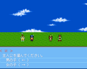
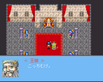
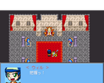
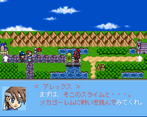
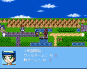

Log in with itch.io to leave a comment.
ひとまず片方でクリアしました。
何かしらのバトルがあるとは思ったけど、数値バトルだったのは面食らいました。このバトルシステムはかなり大昔のスレゲーでやったことあるけど、もしかしてそれが元ですかね。ただ、あまりにも一本道すぎるのでイベント総当たりで簡単にクリアできてしまったのが残念なところです。もうちょっと悩ませるところが欲しかった。
ストーリーに関してもせっかく新キャラデビューなのに、予定調和の魔王把握展開にはしてほしくなかった。正直、今のVIPRPG事情でこのやり方は悪手のような気がします。危機レベルとまではいかなくとも、何か騒動が起きて収拾するするというものがあってよかったはず。外から来たキャラなのだから他と触れ合う意味でもその辺は重要だと思いますね。
予告見て前も言ったかもしれませんが、VIPRPGの中ではこれまでに無いタイプのキャラなので、これまでの追従路線でなく新しい方向性で展開してほしいなと思います。
PIAIありがとうございます。
本作は、メインで製作中の作品がある中であまり時間をかけたくなかった為に
極力ややこしすぎず、（自分の中にある）もしもシリーズらしさも加味した上
シンプルな形にしようとした結果、この形の作品になりました。


Comments
ひとまず片方でクリアしました。
何かしらのバトルがあるとは思ったけど、数値バトルだったのは面食らいました。
このバトルシステムはかなり大昔のスレゲーでやったことあるけど、もしかしてそれが元ですかね。
ただ、あまりにも一本道すぎるのでイベント総当たりで簡単にクリアできてしまったのが残念なところです。
もうちょっと悩ませるところが欲しかった。
ストーリーに関してもせっかく新キャラデビューなのに、予定調和の魔王把握展開にはしてほしくなかった。
正直、今のVIPRPG事情でこのやり方は悪手のような気がします。
危機レベルとまではいかなくとも、何か騒動が起きて収拾するするというものがあってよかったはず。
外から来たキャラなのだから他と触れ合う意味でもその辺は重要だと思いますね。
予告見て前も言ったかもしれませんが、VIPRPGの中ではこれまでに無いタイプのキャラなので、
これまでの追従路線でなく新しい方向性で展開してほしいなと思います。
PIAIありがとうございます。
本作は、メインで製作中の作品がある中であまり時間をかけたくなかった為に
極力ややこしすぎず、（自分の中にある）もしもシリーズらしさも加味した上
シンプルな形にしようとした結果、この形の作品になりました。